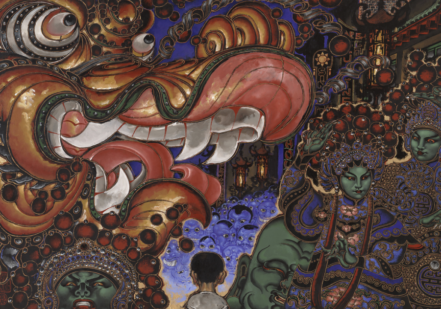

Martin Wong: Chinatown USA
Martin Wong: Chinatown USA is the first US monographic museum exhibition since 2017 of Chinese American artist Martin Wong (1946–1999). The exhibition features over 100 paintings, sculptures, drawings, and photographs illustrating Wong’s idiosyncratic urban realism, his innovative approach to technique and form, his rich surfaces, and the inspiration he took from astrology, architecture, and various modes of language. Curated by Yasufumi Nakamori, PhD, with Ashley Janke, Assistant Curator, Wrightwood 659, the exhibition is presented by Halsted A&A Foundation.
Martin Wong: Chinatown USA traces the development of the work of the queer painter and poet, highlighting Wong’s connection with the art and culture of Asia, in particular through his collecting of pre-modern Asian art and antiquities and his explorations of the Chinatowns of New York and San Francisco from 1970 through the 1990s. A large portion of the exhibition is devoted to his Chinatown paintings, which were the subject of a major exhibition titled Chinatown USA presented at P.P.O.W. Gallery in New York City and the San Francisco Art Institute in 1993.
These works depict notable architecture such as the Chinese pagoda-style building at 241 Canal Street, icons including actor Bruce Lee and Peking opera performer Mei Lanfang, festivities like the Chinese New Year Parade, and street scenes. The exhibition also explores Wong’s interest in counterculture communities (such as Puerto Rican poets and graffiti artists) and language through his poetry and American Sign Language paintings. The latter are presented alongside a small selection of works by artists of the modern graffiti movement from Wong’s personal collection, which he donated to the Museum of the City of New York in 1994. Wong died in 1999 at the age of 53 from an AIDS-related illness.
Martin Wong: Chinatown USA is accompanied by a fully illustrated catalogue published by Halsted A&A Foundation and Gregory R. Miller & Co. Edited by Yasufumi Nakamori, it includes six essays by leading scholars Solomon Adler, Lisa Hsiao Chen, Mark D. Johnson, Vivian Li, Margo Machida, and Lydia Yee.